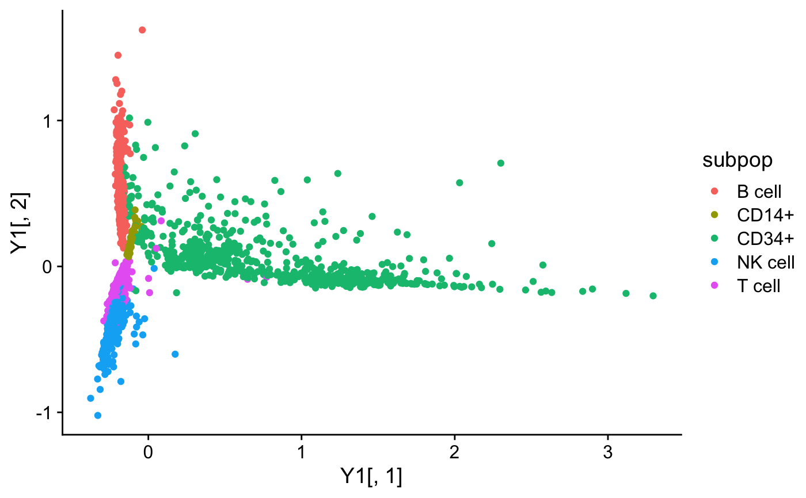
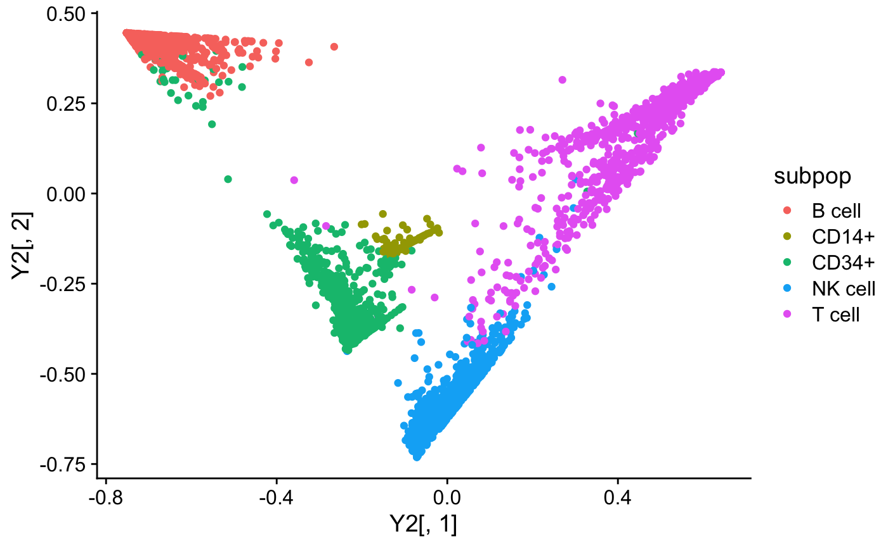
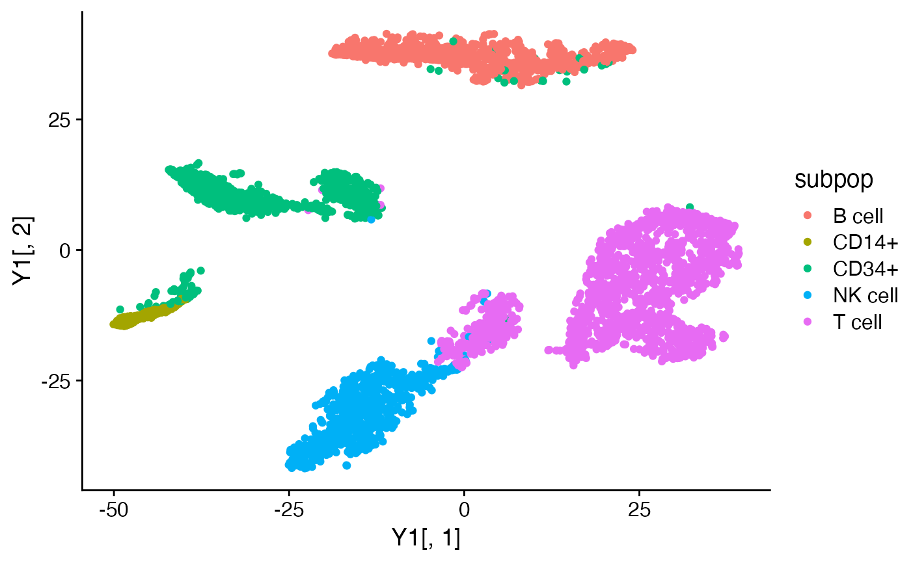
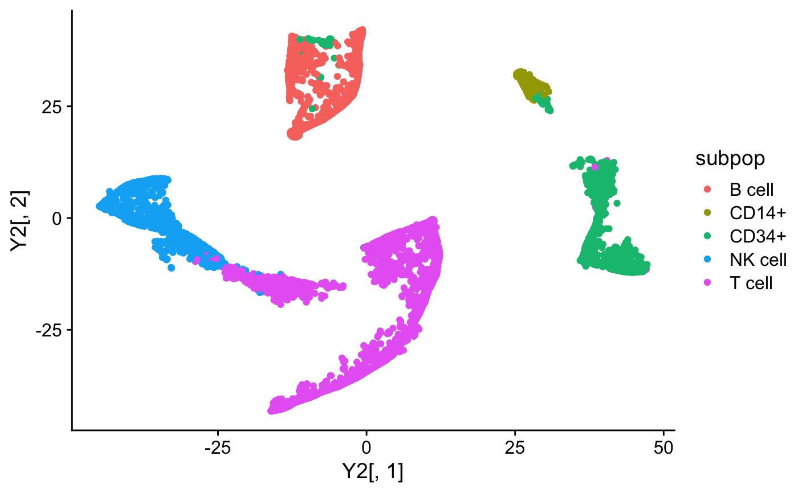
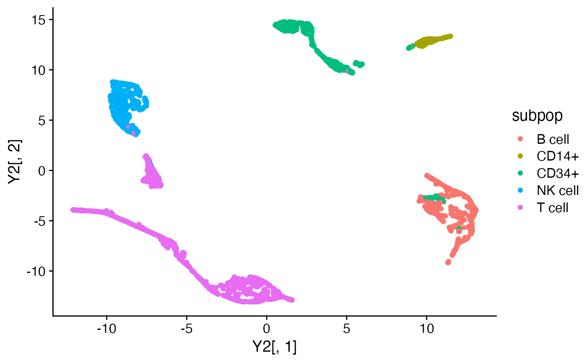

Low-dimensional Embeddings from Poisson NMF or Multinomial Topic Model
Source:R/embeddings.R
embeddings_from_topics.RdLightweight interface for rapidly producing low-dimensional embeddings from matrix factorizations or multinomial topic models. The defaults used are more suitable for producing embeddings from matrix factorizations or topic models.
pca_from_topics(fit, dims = 2, center = TRUE, scale. = FALSE, ...) tsne_from_topics( fit, dims = 2, pca = FALSE, normalize = FALSE, perplexity = 100, theta = 0.1, max_iter = 1000, eta = 200, check_duplicates = FALSE, verbose = TRUE, ... ) umap_from_topics( fit, dims = 2, n_neighbors = 30, metric = "euclidean", scale = "none", pca = NULL, verbose = TRUE, ... )
Arguments
| fit | An object of class “poisson_nmf_fit” or “multinom_topic_model_fit”. |
|---|---|
| dims | The number of dimensions in the embedding. In
|
| center | A logical value indicating whether columns of
|
| scale. | A logical value indicating whether columns of
|
| ... | |
| pca | Whether to perform a PCA processing step in t-SNE or
UMAP; passed as argument “pca” to |
| normalize | Whether to normalize the data prior to running
t-SNE; passed as argument “normalize” to
|
| perplexity | t-SNE perplexity parameter, passed as argument
“perplexity” to |
| theta | t-SNE speed/accuracy trade-off parameter; passed as
argument “theta” to |
| max_iter | Maximum number of t-SNE iterations; passed as
argument “max_iter” to |
| eta | t-SNE learning rate parameter; passed as argument
“eta” to |
| check_duplicates | When |
| verbose | If |
| n_neighbors | Number of nearest neighbours in manifold
approximation; passed as argument “n_neighbors” to
|
| metric | Distance matrix used to find nearest neighbors;
passed as argument “metric” to
|
| scale | Scaling to apply to |
Value
An n x d matrix containing the embedding, where n is the
number of rows of fit$L, and d = dims.
Details
Note that since tsne_from_topics and
umap_from_topics use nonlinear transformations of the data,
distances between points are generally less interpretable than a
linear transformation obtained by, say, PCA.
References
Kobak, D. and Berens, P. (2019). The art of using t-SNE for single-cell transcriptomics. Nature Communications 10, 5416. https://doi.org/10.1038/s41467-019-13056-x
See also
Examples
#> #>#>#>#> #>#>set.seed(1) data(pbmc_facs) # Get the Poisson NMF and multinomial topic model fit to the PBMC data. fit1 <- multinom2poisson(pbmc_facs$fit) fit2 <- pbmc_facs$fit fit2 <- poisson2multinom(fit1) # Compute the first two PCs of the loadings matrix (for the topic # model, fit2, the loadings are the topic proportions). Y1 <- pca_from_topics(fit1) Y2 <- pca_from_topics(fit2) subpop <- pbmc_facs$samples$subpop quickplot(Y1[,1],Y1[,2],color = subpop) + theme_cowplot()# Compute a 2-d embedding of the loadings using t-SNE. Y1 <- tsne_from_topics(fit1)#> Read the 3774 x 6 data matrix successfully! #> OpenMP is working. 1 threads. #> Using no_dims = 2, perplexity = 100.000000, and theta = 0.100000 #> Computing input similarities... #> Building tree... #> Done in 1.22 seconds (sparsity = 0.103577)! #> Learning embedding... #> Iteration 50: error is 67.907680 (50 iterations in 2.43 seconds) #> Iteration 100: error is 55.093056 (50 iterations in 1.60 seconds) #> Iteration 150: error is 53.522954 (50 iterations in 1.60 seconds) #> Iteration 200: error is 52.982533 (50 iterations in 1.61 seconds) #> Iteration 250: error is 52.699767 (50 iterations in 1.61 seconds) #> Iteration 300: error is 0.869698 (50 iterations in 1.92 seconds) #> Iteration 350: error is 0.639252 (50 iterations in 2.20 seconds) #> Iteration 400: error is 0.537416 (50 iterations in 2.09 seconds) #> Iteration 450: error is 0.483018 (50 iterations in 2.12 seconds) #> Iteration 500: error is 0.449935 (50 iterations in 2.03 seconds) #> Iteration 550: error is 0.427851 (50 iterations in 2.05 seconds) #> Iteration 600: error is 0.412277 (50 iterations in 2.23 seconds) #> Iteration 650: error is 0.400706 (50 iterations in 1.95 seconds) #> Iteration 700: error is 0.391901 (50 iterations in 2.00 seconds) #> Iteration 750: error is 0.385024 (50 iterations in 2.03 seconds) #> Iteration 800: error is 0.379472 (50 iterations in 2.04 seconds) #> Iteration 850: error is 0.374967 (50 iterations in 1.95 seconds) #> Iteration 900: error is 0.371282 (50 iterations in 2.01 seconds) #> Iteration 950: error is 0.368180 (50 iterations in 1.95 seconds) #> Iteration 1000: error is 0.365565 (50 iterations in 1.98 seconds) #> Fitting performed in 39.40 seconds.Y2 <- tsne_from_topics(fit2)#> Read the 3774 x 6 data matrix successfully! #> OpenMP is working. 1 threads. #> Using no_dims = 2, perplexity = 100.000000, and theta = 0.100000 #> Computing input similarities... #> Building tree... #> Done in 1.36 seconds (sparsity = 0.101133)! #> Learning embedding... #> Iteration 50: error is 65.682366 (50 iterations in 2.86 seconds) #> Iteration 100: error is 53.576745 (50 iterations in 1.85 seconds) #> Iteration 150: error is 51.737409 (50 iterations in 1.59 seconds) #> Iteration 200: error is 51.078123 (50 iterations in 1.55 seconds) #> Iteration 250: error is 50.736489 (50 iterations in 1.42 seconds) #> Iteration 300: error is 0.800799 (50 iterations in 1.78 seconds) #> Iteration 350: error is 0.576955 (50 iterations in 2.12 seconds) #> Iteration 400: error is 0.477994 (50 iterations in 2.06 seconds) #> Iteration 450: error is 0.425876 (50 iterations in 1.89 seconds) #> Iteration 500: error is 0.394320 (50 iterations in 1.94 seconds) #> Iteration 550: error is 0.373474 (50 iterations in 2.53 seconds) #> Iteration 600: error is 0.358792 (50 iterations in 1.93 seconds) #> Iteration 650: error is 0.347992 (50 iterations in 1.94 seconds) #> Iteration 700: error is 0.339768 (50 iterations in 1.90 seconds) #> Iteration 750: error is 0.333361 (50 iterations in 2.10 seconds) #> Iteration 800: error is 0.328239 (50 iterations in 2.13 seconds) #> Iteration 850: error is 0.324056 (50 iterations in 1.98 seconds) #> Iteration 900: error is 0.320605 (50 iterations in 1.85 seconds) #> Iteration 950: error is 0.317695 (50 iterations in 1.80 seconds) #> Iteration 1000: error is 0.315221 (50 iterations in 1.79 seconds) #> Fitting performed in 39.01 seconds.# Compute a 2-d embedding of the loadings using UMAP. Y1 <- umap_from_topics(fit1)#>#>#>#>#>#>#>Y2 <- umap_from_topics(fit2)#>#>#>#>#>#>#>#>